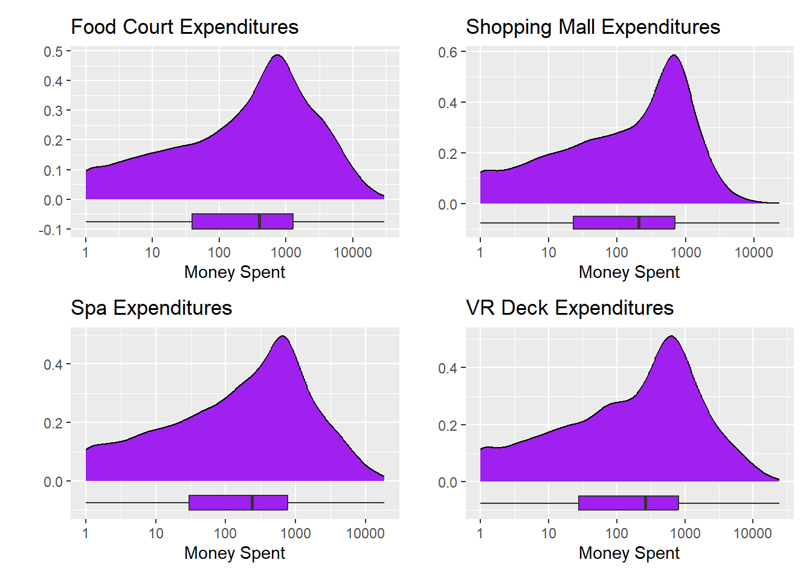

Like its namesake vessel, the Spaceship Titanic encountered tragedy when several of its passengers were warped to an alternate dimension during flight! This analysis is a post-mortem on the flight and passenger list so that we may better understand who is at risk for interdimensional transport during spaceflight and can take future precautionary measures.
Executive Summary
Note
Intentionally left blank, for now. This is the last section to be written.
Introduction
The year is 2063. We’ve come a long way from the early 2020’s, where billionaire tech entrepreneurs launched tiny rockets, holding a handful of celebrities or wealthy elites, into near-Earth orbit for an exorbitant pricetag. The future is now…well, was last week… Things are much more uncertain now. We were so excited with the launch of the Spaceship Titanic. It was supposed to be the beginning of a new era – affordable, long-range space travel for everyone. In hindsight, perhaps naming the thing the Titanic was a poor decision – too tempting for fate and karma.
In any case, space travel is an important venture for humanity at this point in our history as a species. Demand is high, even with last week’s disaster. We have a vested interest in safe and reliable travel through the cosmos and need to better understand what happened to the travelers who’ve disappeared and why it happened to them and not other passengers. Demand for space travel was expected to reach 86 million travelers next year – we can’t continue if we only expect 43 million passengers to arrive at their intended destination.
Exploratory Data Analysis
The original data set on the passengers contained 8693 passengers and 14 features (variables). We can see the first-few passengers’-worth of data printed out below.
Code
data %>%head() %>%kable()
passenger_id
home_planet
cryo_sleep
cabin
destination
age
vip
room_service
food_court
shopping_mall
spa
vr_deck
name
transported
0001_01
Europa
no
B/0/P
TRAPPIST-1e
39
no
0
0
0
0
0
Maham Ofracculy
no
0002_01
Earth
no
F/0/S
TRAPPIST-1e
24
no
109
9
25
549
44
Juanna Vines
yes
0003_01
Europa
no
A/0/S
TRAPPIST-1e
58
yes
43
3576
0
6715
49
Altark Susent
no
0003_02
Europa
no
A/0/S
TRAPPIST-1e
33
no
0
1283
371
3329
193
Solam Susent
no
0004_01
Earth
no
F/1/S
TRAPPIST-1e
16
no
303
70
151
565
2
Willy Santantines
yes
0005_01
Earth
no
F/0/P
PSO J318.5-22
44
no
0
483
0
291
0
Sandie Hinetthews
yes
That data was split into a collection of 6954 training observations and 1739 test observations for validating our final model’s performance. Care was taken to ensure that the passengers who were transported to an alternate dimension are proportionally represented across the training and test sets.
Univariate Analyses
Since our goal is to understand who was transported to an alternate dimension during flight and perhaps gain some insight as to why they were transported, we’ll start by understanding the transported variable and the distributions of the other variables available to us.
Code
train %>%ggplot() +geom_bar(aes(x = transported)) +labs(title ="Distribution of Transported Passengers",x ="Interdimensional Transport Status",y ="Count")
The percentage of passengers transported in the training set is about 50.36%. Let’s look at the distributions of the other categorical variables in the data set.
From the top-left plot, we see that the majority of passengers board on Earth, while fewer passengers board on Europa and Mars. Some passengers have no boarding planet information (NA) – perhaps these passengers are crew members. In the top-right plot, we see that nearly 2/3 of passengers choose the Cryo Sleep option, while around 1/3 do not. Again, some passengers have missing data here. The distribution of destination planet is shown in the lower-right, and tells us that the most popular destination (by a large margin) is TRAPPIST-1e. The only other two destination planets are PSO J318.5-22 and 55 Cancri e. As in the previous plots, some passengers do not have an identified destination. Finally, the proportion of passengers with VIP status is about 2.23.
In each of the plots, we identified several passengers with missing values. There are 0 passengers missing information for all four of these variables. This means that our earlier conjecture about those passengers being crew is unlikely.
Let’s continue on to view the distributions of the numerical predictors available to us. We’ll start with the distribution of passenger ages.
The plot above shows a [near] 0-inflated distribution. That is, there is an inflated number of observations near 0, given the shape of the rest of the distribution. Ages are right-skewed, with a median passenger age of 27 years old. Next we’ll look at the distribution of room service charges.
Both of the plots above show the distribution of room service expenditures. From the plot on the left, we can see that the distribution is very strongly right-skewed. The majority of passengers spent very little on room service, but there were some passengers who ran up extremely large tabs! The plot on the right shows the same variable but on a logarithmic scale. This particular transformation ignores passengers who did not spend any money on room service. From this plot, we actually see that the median room service expenditure among passengers who utilized room service is quite high – it is about NA. We’ll continue our exploration of the available numerical features below, by working with the expenditures at the food court, shopping mall, spa, and VR deck. All of these are right skewed so we’ll just show the distributions on a logarithmic scale.
Code
p_food <- train %>%ggplot() +geom_density(aes(x = food_court), fill ="purple") +geom_boxplot(aes(x = food_court, y =-0.075), fill ="purple", width =0.05) +scale_x_log10() +labs(title ="Food Court Expenditures",x ="Money Spent",y ="")p_shop <- train %>%ggplot() +geom_density(aes(x = shopping_mall), fill ="purple") +geom_boxplot(aes(x = shopping_mall, y =-0.075), fill ="purple", width =0.05) +scale_x_log10() +labs(title ="Shopping Mall Expenditures",x ="Money Spent",y ="")p_spa <- train %>%ggplot() +geom_density(aes(x = spa), fill ="purple") +geom_boxplot(aes(x = spa, y =-0.075), fill ="purple", width =0.05) +scale_x_log10() +labs(title ="Spa Expenditures",x ="Money Spent",y ="")p_vr <- train %>%ggplot() +geom_density(aes(x = vr_deck), fill ="purple") +geom_boxplot(aes(x = vr_deck, y =-0.075), fill ="purple", width =0.05) +scale_x_log10() +labs(title ="VR Deck Expenditures",x ="Money Spent",y ="")(p_food + p_shop) / (p_spa + p_vr)

The distributions of these variables are all quite similar to one another. The distributions are skewed and 0-inflated. The distributions remain left-skewed even when plotted on a logarithmic scale and the observations at 0 are removed. The mean, median, standard deviation, and interquartile range for each expenditure venue are reported below without the removal of those zero observations.
The same metrics are reported below after removal of the zero expenditure values. That is, the summary metrics reported below consider only passengers who utilized the corresponding services. These values will align with measures indicated from the log-scale plots above.
Now that we understand the individual distributions of the variables, its time to look at how these predictors are associated with out response variable (transported). We’ll begin by looking for associations between transported and the categorical variables.
From the four plots above, we have the following takeaways. First, the plot on the left shows the passengers from Europa were much more likely to be transported than passengers from Mars or Earth. Passengers from Earth had a less than 50% transport rate while passengers from Mars had a slightly larger than 50% transport rate. Passengers in Cryo Sleep had an extremely elevated likelihood of transport than those who did not take advantage of Cryo Sleep. There were slight differences in transport rates by destination and by VIP status, but the choice to undergo Cryo Sleep seems to have been the largest influence over whether passengers were transported or not.
Now we’ll consider how the numerical features may be associated with the transported status of passengers.
In the group of plots appearing above, we see that higher food court and shopping mall expenditures were associate with those passengers who were transported than those who were not. Those individuals not being transported had higher room service, spa, and VR deck expenditures on average than those who were not transported.
As a result of this exploratory analysis, we’ve identified several important insights as we proceed to the model construction phase of this analysis. Firstly, about half of passengers were transported to an alternate dimension while the other half were transported safely. All of the numerical features are very heavily right-skewed aside from age. The variable most strongly associated with whether or not a passenger was transported may be the choice to Cryo Sleep during the flight. Other variables showed associations as well, but were less pronounced.
Model Construction and Assessment
Statistical Learning versus Machine Learning
There are two competing objectives that we can have in model construction.
Statistical Learning: We build models with the intent of discovering and interpreting associations between our available predictors and the response.
Fits models and then uses \(p\)-values to identify significant predictors, confidence intervals for coefficients, etc.
Machine Learning: We build models with the intent of making predictions as accurately as possible.
Uses methods like cross-validation for hyperparameter tuning and performance estimation
You do not necessarily need to choose just one approach or the other. Perhaps the problems/challenges you’ve set out to solve would benefit from both descriptive and predictive models. In this case, just make clear to the reader when you are switching between objectives.